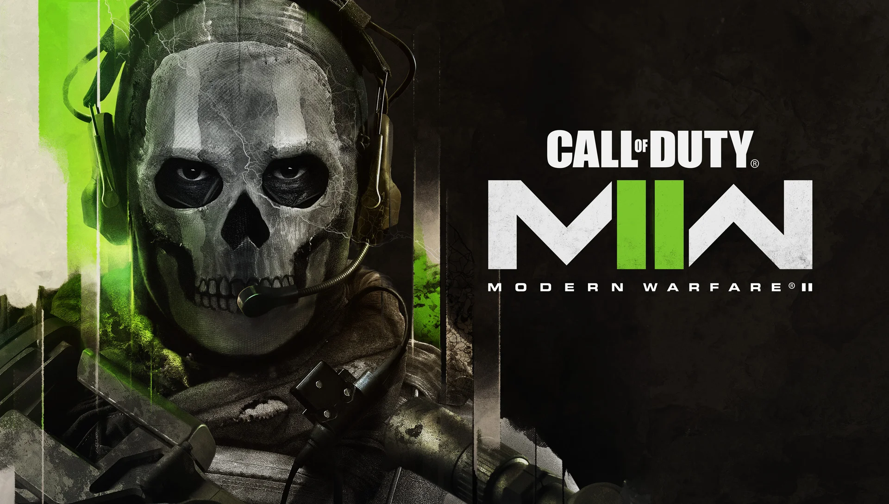

Learn More
Learn about MWlll
MWll
Game Review
Call of duty modern warfare 2 was released on the 28th of october 2022 for steam,playstation,x-box.And many other platforms quickly grossing over 400 thousand active players at the peak.

Creative Commons license-CC BY-NC-ND 4.0, owner- activision/microsoft
Currently MWll is in season five reloaded,(its seccond to last season) before MWlll, from the launch of MWll to now it has gone through many updates,changes and also its highs and lows.Many people were skeptical about MWll when it came out as it was extremely diferent to the old call of duty-(MW2019) some people even said that it was going to fail and movement was gone however only time would tell.
However 11 months later this is far from true MWll is now a lively and well respected game.MWll still gets complaints aqbout how the movement is but most people have got on with it and come to enjoy the slower play style and the new gamemode-DMZ.